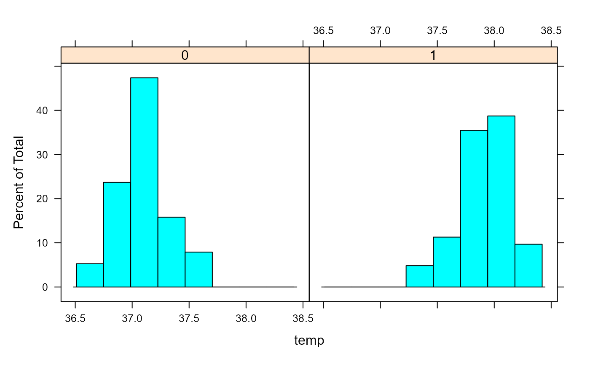

Print examples of chapter 15 of 'R for Dummies'.
ch15.RdTo print a listing of all examples of a chapter, use ch15().
To run all the examples of ch15(), use example(ch15).
ch15()
See also
toc
Other Chapters: ch01, ch02,
ch03, ch04,
ch05, ch06,
ch07, ch08,
ch09, ch10,
ch11, ch12,
ch13, ch14,
ch16, ch17,
ch18, ch19,
ch20
Examples
# Chapter 15 # Testing Differences and Relations # Taking a Closer Look at Distributions ## Observing beavers str(beaver2)#> 'data.frame': 100 obs. of 4 variables: #> $ day : num 307 307 307 307 307 307 307 307 307 307 ... #> $ time : num 930 940 950 1000 1010 1020 1030 1040 1050 1100 ... #> $ temp : num 36.6 36.7 36.9 37.1 37.2 ... #> $ activ: num 0 0 0 0 0 0 0 0 0 0 ...## Using quantile plots ### Comparing two samples qqplot(beaver2$temp[beaver2$activ==1], beaver2$temp[beaver2$activ==0])#> #> Shapiro-Wilk normality test #> #> data: beaver2$temp #> W = 0.93336, p-value = 7.764e-05 #>#> [1] 7.763623e-05#> $`0` #> #> Shapiro-Wilk normality test #> #> data: X[[i]] #> W = 0.95427, p-value = 0.1231 #> #> #> $`1` #> #> Shapiro-Wilk normality test #> #> data: X[[i]] #> W = 0.98326, p-value = 0.5583 #> #># Comparing Two Samples ## Testing differences ### Carrying out a t-test t.test(temp ~ activ, data=beaver2)#> #> Welch Two Sample t-test #> #> data: temp by activ #> t = -18.548, df = 80.852, p-value < 2.2e-16 #> alternative hypothesis: true difference in means is not equal to 0 #> 95 percent confidence interval: #> -0.8927106 -0.7197342 #> sample estimates: #> mean in group 0 mean in group 1 #> 37.09684 37.90306 #>activetemp <- beaver2$temp[beaver2$activ==1] inactivetemp <- beaver2$temp[beaver2$activ==0] t.test(activetemp, inactivetemp)#> #> Welch Two Sample t-test #> #> data: activetemp and inactivetemp #> t = 18.548, df = 80.852, p-value < 2.2e-16 #> alternative hypothesis: true difference in means is not equal to 0 #> 95 percent confidence interval: #> 0.7197342 0.8927106 #> sample estimates: #> mean of x mean of y #> 37.90306 37.09684 #>#> #> Wilcoxon rank sum test with continuity correction #> #> data: temp by activ #> W = 15, p-value < 2.2e-16 #> alternative hypothesis: true location shift is not equal to 0 #>#> #> Paired t-test #> #> data: extra by group #> t = -4.0621, df = 9, p-value = 0.002833 #> alternative hypothesis: true difference in means is not equal to 0 #> 95 percent confidence interval: #> -2.4598858 -0.7001142 #> sample estimates: #> mean of the differences #> -1.58 #># Testing Counts and Proportions ## Checking out proportions survivors <- matrix(c(1781,1443,135,47), ncol=2) colnames(survivors) <- c('survived','died') rownames(survivors) <- c('no seat belt','seat belt') survivors#> survived died #> no seat belt 1781 135 #> seat belt 1443 47#> #> 2-sample test for equality of proportions with continuity correction #> #> data: survivors #> X-squared = 24.333, df = 1, p-value = 8.105e-07 #> alternative hypothesis: two.sided #> 95 percent confidence interval: #> -0.05400606 -0.02382527 #> sample estimates: #> prop 1 prop 2 #> 0.9295407 0.9684564 #>#> #> Pearson's Chi-squared test with Yates' continuity correction #> #> data: survivors #> X-squared = 24.333, df = 1, p-value = 8.105e-07 #>#> 'table' num [1:4, 1:4, 1:2] 32 53 10 3 11 50 10 30 10 25 ... #> - attr(*, "dimnames")=List of 3 #> ..$ Hair: chr [1:4] "Black" "Brown" "Red" "Blond" #> ..$ Eye : chr [1:4] "Brown" "Blue" "Hazel" "Green" #> ..$ Sex : chr [1:2] "Male" "Female"#> Eye #> Hair Brown Blue Hazel Green #> Black 68 20 15 5 #> Brown 119 84 54 29 #> Red 26 17 14 14 #> Blond 7 94 10 16chisq.test(HairEyeMargin)#> #> Pearson's Chi-squared test #> #> data: HairEyeMargin #> X-squared = 138.29, df = 9, p-value < 2.2e-16 #>#> List of 4 #> $ statistic: Named num 0.933 #> ..- attr(*, "names")= chr "W" #> $ p.value : num 7.76e-05 #> $ method : chr "Shapiro-Wilk normality test" #> $ data.name: chr "beaver2$temp" #> - attr(*, "class")= chr "htest"#> [1] 7.269112e-31#> 'data.frame': 72 obs. of 2 variables: #> $ count: num 10 7 20 14 14 12 10 23 17 20 ... #> $ spray: Factor w/ 6 levels "A","B","C","D",..: 1 1 1 1 1 1 1 1 1 1 ...### Building the model AOVModel <- aov(count ~ spray, data=InsectSprays) ### Looking at the object AOVModel#> Call: #> aov(formula = count ~ spray, data = InsectSprays) #> #> Terms: #> spray Residuals #> Sum of Squares 2668.833 1015.167 #> Deg. of Freedom 5 66 #> #> Residual standard error: 3.921902 #> Estimated effects may be unbalanced#> Df Sum Sq Mean Sq F value Pr(>F) #> spray 5 2669 533.8 34.7 <2e-16 *** #> Residuals 66 1015 15.4 #> --- #> Signif. codes: 0 '***' 0.001 '**' 0.01 '*' 0.05 '.' 0.1 ' ' 1#> Tables of effects #> #> spray #> spray #> A B C D E F #> 5.000 5.833 -7.417 -4.583 -6.000 7.167### Looking at the individual differences Comparisons <- TukeyHSD(AOVModel) Comparisons$spray['D-C',]#> diff lwr upr p adj #> 2.8333333 -1.8660752 7.5327418 0.4920707## Modeling linear relations ### Building a linear model Model <- lm(mpg ~ wt, data=mtcars) ### Extracting information from the model coef.Model <- coef(Model) coef.Model#> (Intercept) wt #> 37.285126 -5.344472#> #> Call: #> lm(formula = mpg ~ wt, data = mtcars) #> #> Residuals: #> Min 1Q Median 3Q Max #> -4.5432 -2.3647 -0.1252 1.4096 6.8727 #> #> Coefficients: #> Estimate Std. Error t value Pr(>|t|) #> (Intercept) 37.2851 1.8776 19.858 < 2e-16 *** #> wt -5.3445 0.5591 -9.559 1.29e-10 *** #> --- #> Signif. codes: 0 '***' 0.001 '**' 0.01 '*' 0.05 '.' 0.1 ' ' 1 #> #> Residual standard error: 3.046 on 30 degrees of freedom #> Multiple R-squared: 0.7528, Adjusted R-squared: 0.7446 #> F-statistic: 91.38 on 1 and 30 DF, p-value: 1.294e-10 #>coef(Model.summary)#> Estimate Std. Error t value Pr(>|t|) #> (Intercept) 37.285126 1.877627 19.857575 8.241799e-19 #> wt -5.344472 0.559101 -9.559044 1.293959e-10#> Analysis of Variance Table #> #> Response: mpg #> Df Sum Sq Mean Sq F value Pr(>F) #> wt 1 847.73 847.73 91.375 1.294e-10 *** #> Residuals 30 278.32 9.28 #> --- #> Signif. codes: 0 '***' 0.001 '**' 0.01 '*' 0.05 '.' 0.1 ' ' 1Model.anova['wt','Pr(>F)']#> [1] 1.293959e-10## Predicting new values ### Getting the values new.cars <- data.frame(wt=c(1.7, 2.4, 3.6)) predict(Model, newdata=new.cars)#> 1 2 3 #> 28.19952 24.45839 18.04503#> fit lwr upr #> 1 28.19952 26.14755 30.25150 #> 2 24.45839 23.01617 25.90062 #> 3 18.04503 16.86172 19.22834#> fit lwr upr #> 1 28.19952 21.64930 34.74975 #> 2 24.45839 18.07287 30.84392 #> 3 18.04503 11.71296 24.37710